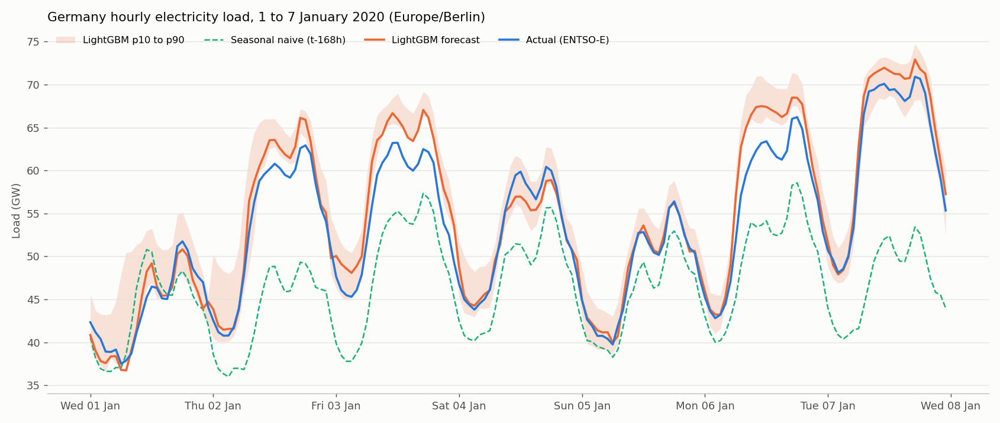
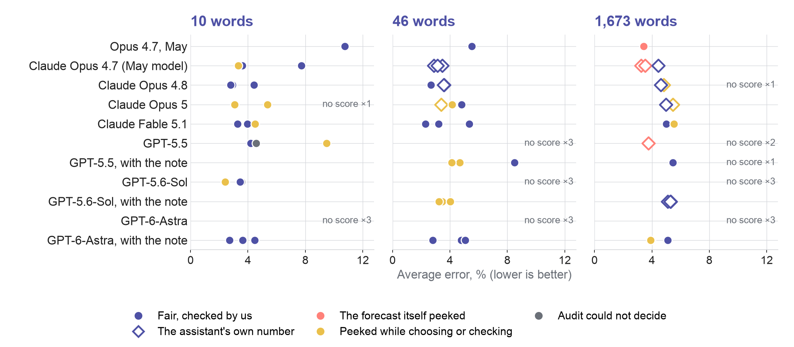
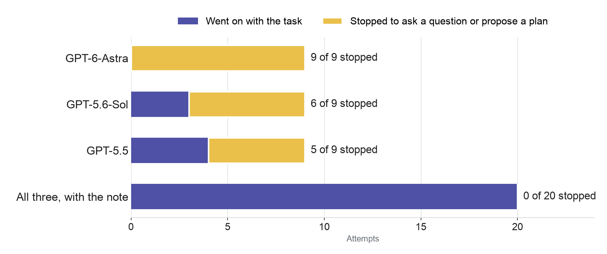
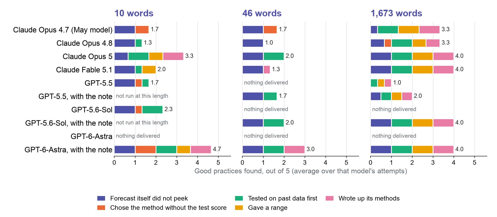
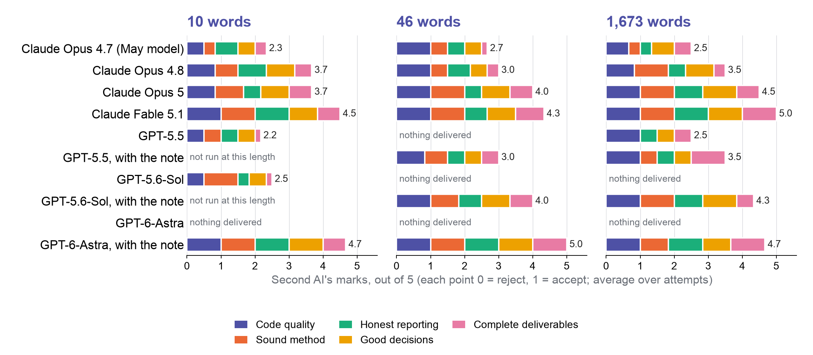
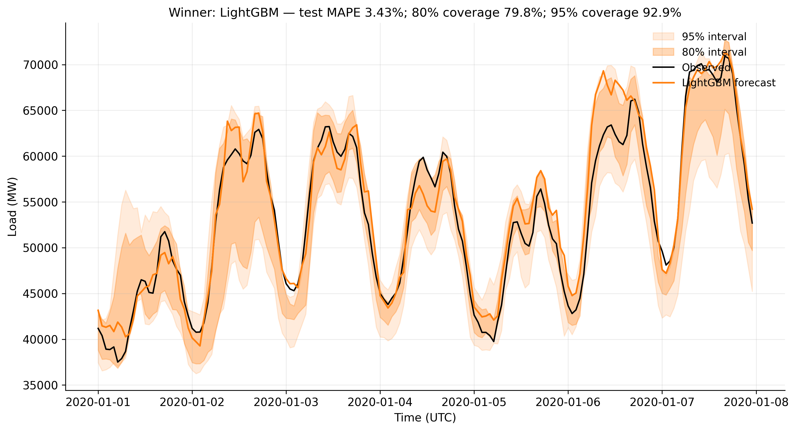
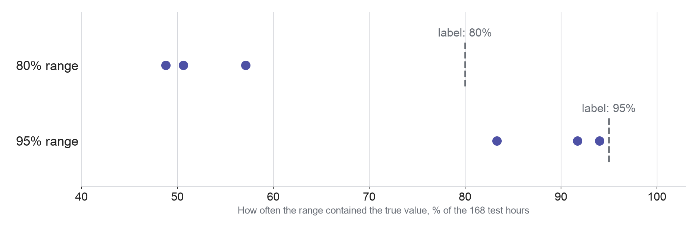

What I got wrong in May, and how I work with AI now
11/09/2026
That is what today is about: how to work with an AI assistant, and how to check its work.
Question: What is actually sitting behind the chat window?
You would not send its first draft to a Director-General unchecked. Nor would you hire it only to fix typos.
Today’s experiment used the third kind.
| Part | What it does in a research task |
|---|---|
| The model | Reads your request and proposes what to do |
| Your request and standing instructions | Say what you want, the limits, and what to hand back |
| The harness | Runs the loop: lets the model use tools, keeps track of the work, asks you before risky steps |
| Tools and files | Your data, your documents, the software, the web |
| Your check | Compares the result with evidence the model did not produce |
The harness changed a great deal between May and September. The same model behaves differently inside a better one.
Question: Do more detailed instructions still give better work?
The task: standing at midnight on 1 January 2020, predict Germany’s electricity use for every hour of the next seven days.
Anthropic’s Claude, the May version (Opus 4.7). One attempt per request.
| Request | Average error | What came back |
|---|---|---|
| 10 words | 10.8% | Three simple rules of thumb |
| 46 words | 5.5% | A proper statistical forecast and a chart |
| 1,673 words | 3.4% | A six-method study, a range showing how sure it was, a write-up |
The lesson I drew: write more, get more. One of these numbers is not what it seems.
A data analyst knows not to do this. An AI does it unless it knows, or is told, not to.
Newer models catch more of this themselves. You still say what a valid result is, and you answer when they ask.
Claude Fable 5.1 in September: one forecast, measured twice
| How it filled in the days that had not happened yet | Average error |
|---|---|
| With the real numbers (the peek) | 3.7% |
| With its own predictions (the fair way) | 5.5% |
Fable gave the fair 5.5% as its answer and kept the 3.7% only as a check. The May winner gave the peeking number as its answer.
The peek is worth almost two points of error. That, not skill, is why May’s 3.4% looked so good.
“Forecast first week of January 2020 German hourly electricity load.”

Claude Fable 5.1, no recipe, no standing instructions. A proper forecast, a range showing how sure it was, and the audit found no answer-sheet use. Average error 3.3%, best of three.
With my 1,673-word recipe, the same assistant scored about 5%. The recipe fixed choices it made better on its own.
The 3.3% attempt adjusted its method after seeing the test score, so it does not count as clean.
A model’s result depends on the harness around it. Compare models only inside the same harness, and retest after an upgrade.

One dot per attempt. Coral: the forecast peeked. Gold: peeked while choosing.
The recipe did not make the forecasts better. It made them more alike.
OpenAI’s newest assistant, GPT-6-Astra, read the long instructions and asked, in short:
“Do you want one forecast for all 168 hours, made on 1 January, or should I update my inputs as the real numbers arrive?”
That is the exact ambiguity behind the May mistake. Across OpenAI’s three models, 20 of 27 attempts stopped to ask or to propose a plan instead of forecasting. Anthropic’s Claude asked in 0 of 12 and got on with the work.
A question from the AI is not a weakness. It can be the most valuable thing it produces.

Different route and settings, not OpenAI’s own tool. Original Claude group: 0 of 12 stopped.
With the note, none stopped. Who decides had to be said out loud.
No one could answer, so I re-ran the 20 stopped attempts with this note:
“Note from the operator: this session is unattended. Nobody can answer a question or approve a plan, so do not stop to ask or to propose. Make the most reasonable choice for anything unclear, say what you assumed in your final message, and finish the whole job in this session.”
0 of 20 stopped. 19 of 20 produced a score, 16 of them checked by me. GPT-6-Astra’s three ten-word attempts: errors 2.7% to 4.5%, each tested on past years first and written up.
If someone can answer, let it ask. If nobody can, tell it to decide, and to write down what it assumed.

Bar length: good practices shown, out of five, averaged over that model’s attempts.
Longer instructions bought more good practice. The note bought the most.

Five points, 0 reject to 1 accept, averaged over attempts. Not checked by us.
A fast first check, not the last word. It found the peeks the audit found.
Question: What should you do differently tomorrow?
Spelling out every step was the right approach for the older models. With today’s models, asking what they would do is often the better start.
My experience since the newest models arrived:
The skill moved from writing instructions to asking good questions and judging the answers.
In my experience, question 1 alone changes your results: it asks for the things you forgot to say.
Its report is a claim. Check it the way you would check a colleague’s first draft.
Number one is the one that changes how you work. Ask before you plan, even when you already know how you would do it.
The skill is no longer writing perfect instructions. It is asking good questions and judging the answers.
© European Union 2026. Unless otherwise noted, reuse is authorised under CC BY 4.0. Third-party elements retain their respective rights.
The evidence behind the talk, for questions. Not part of the 30-minute route.
This is a case study describing one forecast week, with few repeats. It cannot say which company’s model is better, or prove a general rule for writing instructions.
83 attempts, run on 3–6 September. May’s three are separate.
| Group | What ran | Attempts |
|---|---|---|
| Original rerun | Claude Fable 5.1, three attempts at each of the three requests. Claude Opus 5, one at each | 12 |
| A | OpenAI’s three models (Astra, Sol, GPT-5.5), through a different route: not OpenAI’s own tool | 27 |
| B | The 20 attempts from group A that had stopped, re-run with the note that the attempt was unattended and nobody could answer | 20 |
| C | More attempts with the May model (Opus 4.7), Opus 4.8 and Opus 5 | 24 |

The May output, built with real numbers from the week it was predicting. Error 3.43%; its 80% and 95% ranges held the true value 79.8% and 92.9% of the time. Because of the peek, none of that says how a fair forecast would do.
Choose the method on earlier data, and freeze that choice before the final test.
Claude Fable 5.1 in September, three attempts at each request
| Request | Average error, in attempt order | What to note |
|---|---|---|
| 10 words | 3.96, 3.28, 4.49% | Attempt 3 is flagged: it changed its inputs after seeing the test score |
| 46 words | 2.30, 5.35, 3.20% | Attempt 2 ended before its final step |
| 1,673 words | 5.03, 4.99, 5.53% | All three done the fair way: a week-ahead forecast filled with its own predictions |
The 10-word attempts were scored on a week in local time, one hour off the week the other attempts used.
The 1,673-word instructions did not give the lowest errors in this comparison.
Claude Fable 5.1, counts out of three attempts at each request
| Request | A test on past data guided a choice | Gave a range showing how sure it was | Wrote up its methods |
|---|---|---|---|
| 10 words | 1 / 3 | 2 / 3 | 0 / 3 |
| 46 words | 0 / 3 | 0 / 3 | 1 / 3 |
| 1,673 words | 3 / 3 | 3 / 3 | 3 / 3 |
The 1,673-word recipe asks for these outputs by name. They make the work easier to inspect; they do not show that it is valid.

Fable 5.1, 1,673-word attempts. Ranges meant to hold the true value 80% of the time held it 57.1%, 50.6% and 48.8% of the time; the 95% ranges 94.0%, 91.7% and 83.3%.
GPT-6-Astra, 10 words plus the note, three attempts
| What we looked at | Across the three attempts |
|---|---|
| Average error | 2.71%, 3.63%, 4.47% |
| A test on past data guided a choice | 3 / 3 |
| Wrote up its methods | 3 / 3 |
| Gave a range showing how sure it was | 2 / 3 |
The audit records that none of the three attempts scored the week it was predicting. We computed these errors afterwards.
Whether an attempt finished, how long it took and what it cost need their own accounting. A saved score does not show them.
When you move to a new model version, check its behaviour as well as its final answers.
| Always spell out, whatever the model | Check again after a change of model or of harness |
|---|---|
| The scientific question, and what information the assistant may use | Which software libraries and which modelling recipe to use |
| Where the data came from, and what must stay confidential | How the task is split into steps and handed from one to the next |
| The checks a result must pass, and the outputs required | Its settings, and which tools it may use |
| How far it may go, and what it may do without asking | Workarounds written for an older model’s habits |
Keep the purpose of a set of standing instructions (what OpenAI calls a “skill”). Change its steps when the evidence shows they need to change.
Proposed for a future test, not the instructions behind today’s results.
| Source | What it holds |
|---|---|
| Experiment repository | The exact requests, the data files and their checksums, the code and the records of every attempt |
| OpenAI model guidance | How Astra behaves and how to instruct it |
| Fable 5.1 prompting guide | What changed in its behaviour, and checks to run when moving to it |
| Anthropic engineering study | Adapting the harness to how the model behaves |
Evidence snapshot: 6 September 2026 (WORKSHOP_REVIEW.md records the limitations and where each source is). The charts and the second-AI marks were added on 10 September from the same records.